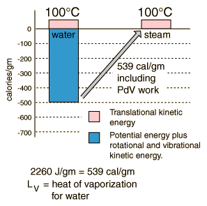

Heat of Vaporization
|

| The energy required to change a gram of a liquid into the gaseous state at the boiling point is called the "heat of vaporization". This energy breaks down the intermolecular attractive forces, and also must provide the energy necessary to expand the gas (the PDV work). For an ideal gas , there is no longer any potential energy associated with intermolecular forces. So the internal energy is entirely in the molecular kinetic energy.
The final energy is depicted here as being in translational kinetic energy, which is not strictly true. There is also some vibrational and rotational energy.
|
A significant feature of the vaporization phase change of water is the large change in volume that accompanies it. A mole of water is 18 grams, and at STP that mole would occupy 22.4 liters if vaporized into a gas. If the change is from water to steam at 100°C, rather than 0°C, then by the ideal gas law that volume is increased by the ratio of the absolute temperatures, 373K/273K, to 30.6 liters. Comparing that to the volume of the liquid water, the volume expands by a factor of 30600/18 = 1700 when vaporized into steam at 100°C. This is a physical fact that firefighters know, because the 1700-fold increase in volume when water is sprayed on a fire or hot surface can be explosive and dangerous.
One way to visualize this large volume change is to note the volume of 18 ml of water in a graduated cylinder as the volume occupied by Avogadro's number of water molecules in the liquid state. If converted into steam at 100°C this same mole of water molecules would fill a balloon 38.8 cm in diameter (15.3 inches).
|
Index
Phase change concepts |